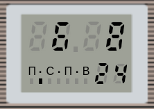

(additional)
hours, minutes, day of the month
(the second dot is blinking)
(main)
hours, minutes, seconds
(the second dot is constantly lit)
(calendar)
day of the month, month, year
(the second dot is not lit)
In the real MK 87, in addition to the device itself, a separate watch module
from the "Elektronika 51" wristwatch is installed (not to be confused with the MK 51).
The only difference is the absence of backlight and, accordingly, button 3 for it.
You can learn about working with the watch module from both the
instruction manual
for MK 87 and from the passport for the watch itself.
Unfortunately, there is only a Russian version of the documentation, which makes it difficult for foreign users to understand.
However, the main essence of working with the watch is described on this page.
The "watch_51" module, written in JavaScript,
simulates the behavior of this watch, including all the modes present.
Since this is a simulator (i.e. it uses its own pseudo-microprogram for work,
and not the native algorithms of the clock microchip), its simulation may be not entirely accurate (especially since I don't have this clock).
The display of the watch module consists of 3 groups of seven-segment indicators (two large and one small),
a second point, as well as a line of 7 segments displaying the day of the week (starting with Monday).
The module has two buttons. The first one switches display modes and changes values during setup.
The second one turns on setting mode and allows you to switch between values.
By default, each time the page is loaded, the clock is set to the current system time and the first display mode is set (in the MK 87 manual it is called the additional mode) - hours, minutes, day of the month.
|
|
 |
| mode 1 (additional) hours, minutes, day of the month (the second dot is blinking) |
mode 2 (main) hours, minutes, seconds (the second dot is constantly lit) |
mode 3 (calendar) day of the month, month, year (the second dot is not lit) |
Modes 1 and 2 can be turned on permanently, while mode 3
is turned on only for 2 seconds, after which it returns to mode 1.
When entering setting mode, the value being changed starts flashing, it can be increased by pressing button 1.
Switching between values is done by button 2 and occurs in the following order (after the day of the week the mode turns off):

After 12 seconds (the instruction indicate 8, but according to owners measurements, this happens after 12 seconds)
of inactivity the setup mode automatically switches off.
The only exception is seconds correction, which does not result in exiting the mode. When button 1 is pressed, the seconds counter is reset to 0,
and if the number of seconds was 30 or more, one minute is added along with the reset.
From the options panel you can reset the clock (as if both buttons were pressed at once),
for this purpose use the "Reset clock (11:11)" button.
According to the instruction, when resetting the watch, the following values are set:
11 hours, 11 minutes, 11 seconds, 11 day, 11 month, 11 year, day of the week - Monday.

The "Set real time" button sets the current system time on the clock, in case you knocked it down during setting up.